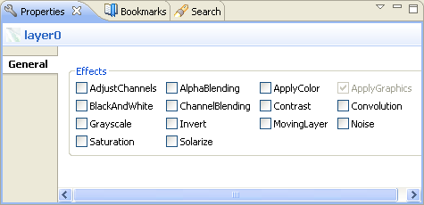

Effect
controls view
Effect controls view can be activated by a selecting a component which
can be animated. Right click on the component and select Edit/Animate
or you can click on Edit/Animate button from the tool bar.

Figure:
Effects Control View
The Effect controls view allows you to:
- Adjust effect parameters
- Adjust the degree of merging
between layers
- Animate effects by marking
the animate checkbox
Note:
The contents of the
Effect controls view are the same as in the pop-up window that opens
when you right-click an effect in the Animation editor and select
Parameters.